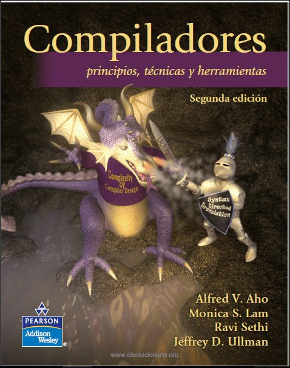

Biblioteca Digital
Esta sección reúne algunos de los libros más importantes utilizados en el estudio de Lenguajes Formales, Autómatas, Compiladores y Teoría de la Computación.
Introducción a la Teoría de Autómatas, Lenguajes y Computación
Autores: John E. Hopcroft, Rajeev Motwani y Jeffrey D. Ullman
Considerado uno de los libros más importantes en el área de lenguajes formales. Explica autómatas finitos, expresiones regulares, gramáticas, autómatas de pila y máquinas de Turing.

Compilers: Principles, Techniques and Tools
Autores: Alfred V. Aho, Monica S. Lam, Ravi Sethi y Jeffrey D. Ullman
Conocido como el "Libro del Dragón". Es la referencia clásica para estudiar compiladores, análisis léxico, análisis sintáctico, optimización y generación de código.
Introduction to the Theory of Computation
Autor: Michael Sipser
Uno de los textos más utilizados para comprender computabilidad, complejidad computacional, máquinas de Turing y teoría formal de lenguajes.